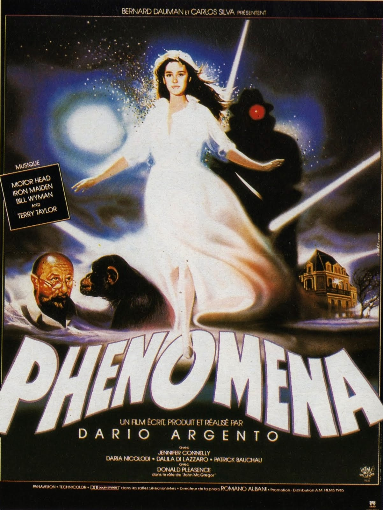
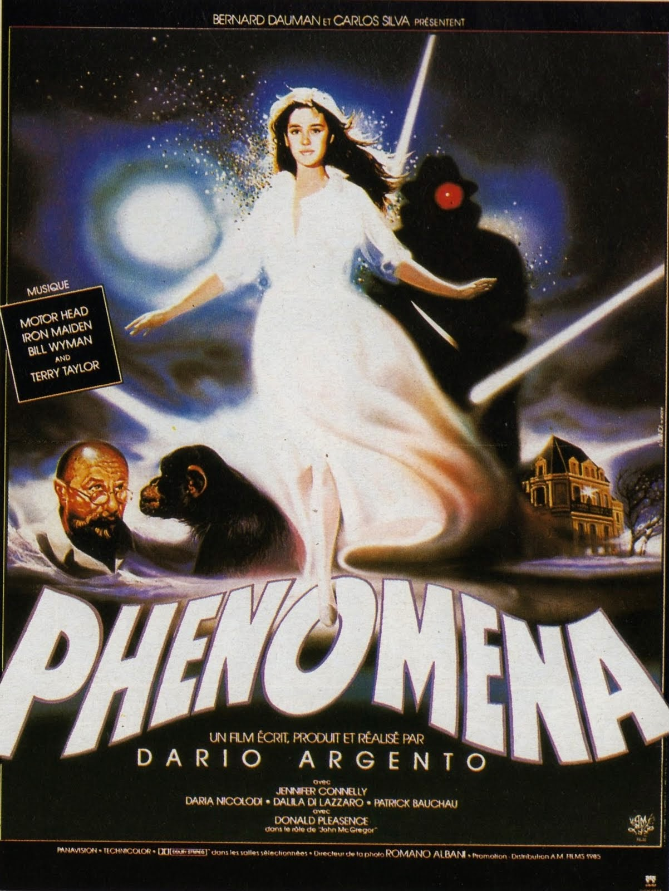

1980-1985:
Em 1980 a 1985 foram lançadas várias séries e filmes voltados ao terror ( tema que se sobressaia na época ) como por exemplo:
- Mansão do Inferno (Inferno) de 1980, filme dirigido por Dario Argento
- A série sexta feira 13 de 1980
- A Morte do Demônio (Evil Dead)de 1981 de Sam raimi que redefiniu os padrões do gênero.
- O Estripador de Nova York (Lo Squartatore di New York) de 1982 criado por Lucio fulci
- Fome de Viver de 1983 dirigido por Tony Scoot
- A Hora do Pesadelo de 1984 criado por Wes Craven
- Phenomena de 1985 Um filme de Dario Argento.


 

Músicas de sucesso na época:
1980:
- 14 Bis - Bola de meia, bola de gude
- 14 Bis - Caçador de mim
- 14 Bis - Nova manhã
- 14 Bis - Planeta sonho
- 14 Bis - Sonho de valsa
- A Cor do Som - Abri a porta
- A Cor do Som – Palco
1981:
- A Cor do Som - Alto astral
- A Cor do Som - Mudança de estação
- A Taste Of Honey - Sukiyaki
- ABBA - The Winner Takes It All
- AC/DC - For Thouse About To Rock
1982:
- 14 Bis - Linda juventude
- 14 Bis - Uma velha canção Rock N' Roll
- 38 Special - Caught Up In You
- A Cor do Som - Magia tropical
- A Cor do Som - Menino Deus
1983:
- 14 Bis - Pele de verão
- A Cor do Som - As quatro fases do amor
- A Cor do Som - Das maravilhas do mar fez-se o esplendor de uma noite
- A Turma do Balão Mágico & Djavan - Superfantástico
- A Turma do Pirlimpimpim - Lindo balão azul
- ABC - Poison Arrow
- ABC - The Look Of love
1984:
- 14 Bis - Adoráveis criaturas
- 14 Bis - Nave de prata
- 14 Bis - Todo azul do mar
- 14 Bis - Xadrez chinês
- 38 Special - Teacher Teacher
- After All - Moments Of Love
1985:
- 14 Bis - Só se for
- A Cor do Som - Que flor é você?
- A Cor do Som - Som da cor
- ABC - Be Near Me
- Absyntho - Lobo
- A-Ha - Take On Me
- Air Supply - I Can Wait Forever
- Air Supply - Just As I Am
Os acontecimentos que marcaram a decada de 1980-1985 foram:
- 30 de setembro de 1980: publicado o padrão da ethernet (tecnologia para redes locais).
- Em 1980, ocorre a primeira videoconferência da história das telecomunicações.
- Abril de 1981: a nave espacial Colúmbia faz seu primeiro voo.
- Janeiro de 1983: a empresa Apple lança o computador Macintosh.
- Em 1983, os pesquisadores Luc Montagnier e Robert Gallo identificam o vírus da AIDS.
- 7 de outubro de 1984: nasce o primeiro bebê de proveta no Brasil
- Em 1984, na Austrália, nasce o primeiro bebê de proveta a partir de um embrião congelado.
- 1985: identificado, por climatologistas, o buraco na camada de ozônio.